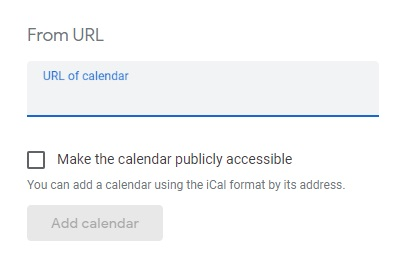

Purpose of this Tutorial
Use this guide to help chapter members subscribe to your chapter Event Calendar with their Android and iPhone smartphones. Click the appropriate link to;
Use this guide to help chapter members subscribe to your chapter Event Calendar with their Android and iPhone smartphones. Click the appropriate link to;
Subscribing to the calendar with an iPhone is straightforward. Simply click on the Subscribe link. A message will pop up asking if you want to subscribe to the calendar. Click the Subscribe button in the pop up and the chapter calendar will now appear in the list of calendars on your iPhone. Alternately, you can go to the chapter calendar page and click the Subscribe link that appears at the top and bottom of the page.
There have been a few reported instances where the link does not work. If that happens please update the link to add www. after the two forward slashes (notice that it's three w's and a period).
There are some iPhone user's that do not use the supplied calendar but instead have imported and use a Google calendar. Any member that has done that will need to follow the steps outlined in the Android section to subscribe with that calendar.
Adding the Event Calendar to an Android phone isn't as easy as it is with an iPhone. Bear in mind that with all the different flavors of the Android operating system out there, these are pretty general instructions. Clicking the link on the calendar page will not subscribe to the calendar. In order to subscribe on an Android, you will need to sign into your Google account on a PC or Mac.
Don't have a Google account you say? Even if you don't use it, the Android operating system more or less makes you set one up during the initial setup of the phone. While it is not required to use the phone, it is necessary to be able to download apps (like HOG[SCAN] or Facebook) and use other features. If you are not sure what your Google account username is, on your phone check out Settings, then Accounts, and you should see it listed there somewhere.
Once you have your Google username (and hopefully password) you'll need to login to your Google account on your PC or Mac. After logging in, click on the Google Apps link (it looks like a square of dots) in the upper right corner of the browser window. This will display a grid of apps that looks like the one below.
webcal:// and have your website name followed by /calendar/feed
After filling in the URL, click the Add calendar button. (It won't be greyed out after filling in the URL) It is a good idea to make this information readily available to your chapter members...old or new.
I've placed this in the Blog on my chapter's website because we do not post to our blog. If your chapter uses the Blog to post information frequently then this information could be lost or buried and new users will not be able to easily find it. In that case, create a Basic page and link to it in the navbar so it can be found and utilized.